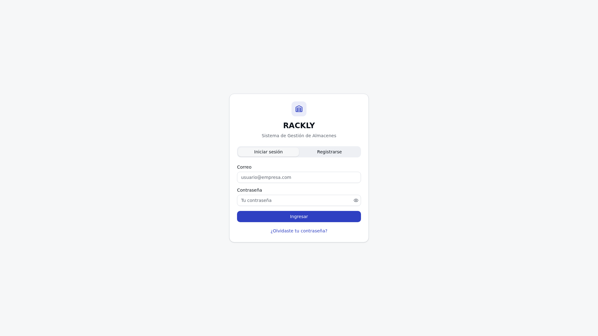
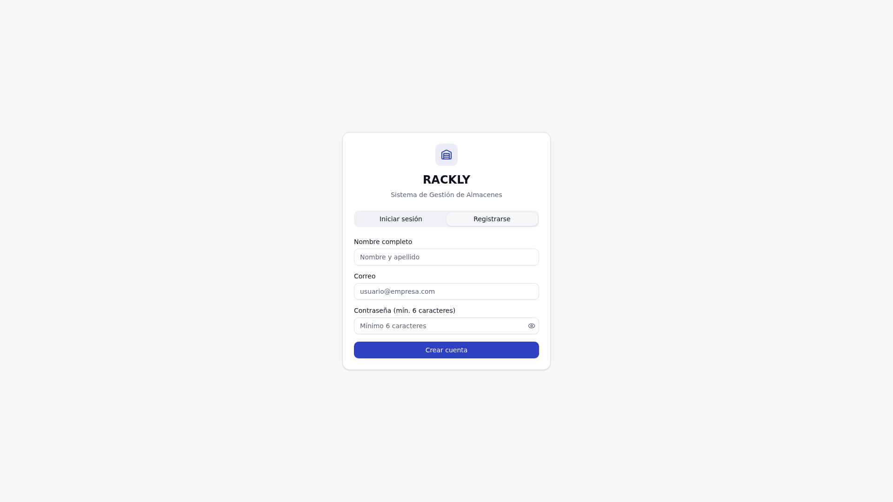
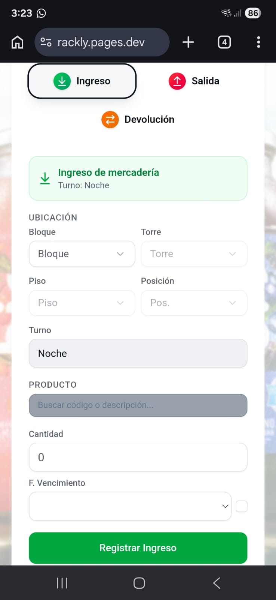

Rackly es un sistema integral de gestión de almacenes diseñado para optimizar el control de inventario en entornos de almacenamiento que utilizan estructuras de racks y áreas de piso. La plataforma permite registrar, consultar y administrar las mercaderías almacenadas en posiciones específicas dentro de un almacén, brindando visibilidad completa sobre la ubicación, cantidad y fecha de vencimiento de cada producto.
El sistema se divide en dos módulos principales: Kardex Racks, que gestiona las posiciones verticales de almacenamiento organizadas por bloques, torres, pisos y posiciones; y Kardex Piso, que administra las áreas de almacenamiento a nivel de suelo organizadas por sectores, columnas, subcolumnas, posiciones y niveles. Ambos módulos soportan operaciones de ingreso, salida, traslado y devolución de mercadería.
Este manual tiene como propósito proporcionar una guía detallada y completa para que los usuarios del sistema Rackly puedan utilizar todas las funcionalidades disponibles de manera eficiente. El documento está dirigido a operarios de almacén, supervisores y administradores del sistema que necesiten realizar operaciones de control de inventario.
El manual sigue el formato de la American Psychological Association en su séptima edición (APA 7), garantizando una presentación profesional y estandarizada de la información.
Para utilizar Rackly de manera óptima, se recomienda cumplir con los siguientes requisitos técnicos:
Dispositivo móvil con pantalla de al menos 5 pulgadas (smartphone, tablet). Se recomienda el uso en dispositivos móviles por la interfaz optimizada.
Navegador web moderno: Google Chrome, Mozilla Firefox, Safari o Microsoft Edge (versiones actualizadas).
Conexión a Internet estable (Wi-Fi o datos móviles 4G/5G). Mínimo 1 Mbps de velocidad de subida y bajada.
Credenciales de acceso proporcionadas por el administrador del sistema o registro previo en la plataforma.
Se recomienda utilizar Rackly en un navegador móvil (Chrome para Android o Safari para iOS) para una experiencia óptima. La interfaz está diseñada con un enfoque mobile-first que prioriza la usabilidad en pantallas táctiles.
El inicio de sesión es el primer paso para acceder a las funcionalidades de Rackly. A continuación se describe el proceso paso a paso utilizando la pantalla de login del sistema.

Figura 1. Pantalla de inicio de sesión de Rackly.
Correo electrónico ①, ingrese la dirección de correo con la que fue registrado en el sistema.
Contraseña ②, ingrese su contraseña. Si necesita verificar los caracteres ingresados, pulse el botón Ver contraseña ③ para mostrar la contraseña en texto plano.
Ingresar ④. El sistema validará sus credenciales y lo redirigirá al panel principal de Rackly.
Si olvida su contraseña, comuníquese con el administrador del sistema para restablecerla. Rackly no permite la recuperación automática de contraseñas por motivos de seguridad.
Si es la primera vez que utiliza el sistema, deberá crear una cuenta de usuario. El proceso de registro le permite obtener credenciales de acceso individuales.

Figura 2. Pantalla de registro de nuevo usuario en Rackly.
Registrarse ⑤ para acceder al formulario de registro.
Nombre completo ① con su nombre y apellido. Este dato se utilizará para identificarlo dentro del sistema.
Correo electrónico ②, ingrese una dirección de correo válida que será su identificador único de usuario.
Contraseña ③, cree una contraseña que contenga al menos 8 caracteres. Se recomienda combinar letras mayúsculas, minúsculas, números y caracteres especiales.
Confirmar contraseña ④, repita exactamente la misma contraseña para verificar que no haya errores de tipeo.
Registrarse ⑤. Si todos los campos son válidos, el sistema creará su cuenta y lo redirigirá automáticamente a la pantalla de inicio de sesión.
Si el correo electrónico ya se encuentra registrado en el sistema, se mostrará un mensaje de error. En ese caso, intente iniciar sesión directamente o solicite asistencia al administrador.
El módulo Kardex Racks es el componente central de Rackly para la gestión de mercadería almacenada en estructuras verticales de racks. Este módulo permite realizar operaciones de ingreso, salida, traslado, devolución, consulta de stock y visualización de la ocupación del almacén.
La función de ingreso de mercadería permite registrar la entrada de productos al almacén, asignándolos a una posición específica dentro de la estructura de racks. Cada rack se identifica mediante cuatro coordenadas: Bloque, Torre, Piso y Posición.

Figura 3. Formulario de ingreso de mercadería en la pestaña Kardex Racks.
Kardex Racks desde el menú principal del sistema.
Turno ① correspondiente a su jornada laboral: «Día» o «Noche». Esta información queda registrada en el movimiento.
Bloque ② donde desea almacenar la mercadería. Utilice el menú desplegable para ver las opciones disponibles.
Torre ③ dentro del bloque elegido. Cada bloque puede contener múltiples torres.
Piso ④ que indica la altura dentro de la torre. Los pisos se numeran generalmente de abajo hacia arriba.
Posición ⑤ dentro del piso. Esta coordenada determina el lugar exacto en el nivel seleccionado.
Búsqueda de producto ⑥, ingrese el código o la descripción del producto. El sistema mostrará sugerencias automáticas mientras escribe. Seleccione el producto deseado de la lista.
Cantidad ⑦, ingrese el número de unidades que serán almacenadas en la posición seleccionada.
Fecha de vencimiento ⑧ si el producto lo requiere. Utilice el selector de fecha para elegir la fecha correspondiente. Si el producto no tiene fecha de vencimiento, marque la casilla Sin vencimiento.
Registrar Ingreso ⑨. El sistema procesará el registro y mostrará un mensaje de confirmación.
El sistema verificará automáticamente que la posición seleccionada tenga capacidad disponible y que los datos ingresados sean válidos antes de procesar el ingreso. En caso de error, se mostrará un mensaje descriptivo.
La función de salida de mercadería permite registrar la extracción de productos del almacén. Esta operación reduce el stock disponible en la posición especificada y queda registrada en el historial de movimientos.
Al seleccionar la pestaña Salida dentro de Kardex Racks, se despliega un formulario que permite buscar productos y registrar su extracción. La interfaz incluye los siguientes elementos principales:
El sistema soporta la salida masiva de mercadería, lo que permite extraer productos de múltiples posiciones simultáneamente. Para utilizar esta función:
checkboxes) junto a cada posición con stock disponible.Kardex Racks y seleccione la pestaña Salida.
Turno correspondiente a su jornada laboral actual.
código del producto que desea extraer. Seleccione el producto de las sugerencias mostradas.
posiciones con stock del producto. Cada entrada muestra la ubicación (Bloque/Torre/Piso/Posición), la cantidad disponible, la fecha de vencimiento y el proveedor.
salida masiva, marque las casillas de verificación junto a las posiciones deseadas y especifique las cantidades para cada una.
Registrar Salida para confirmar la operación. El sistema actualizará el stock en las posiciones afectadas y registrará el movimiento.
Si intenta extraer una cantidad mayor al stock disponible en una posición, el sistema mostrará el mensaje «Stock insuficiente» y no permitirá completar la operación. Verifique las cantidades e intente nuevamente.
La función de traslado permite mover mercadería de una posición a otra dentro del almacén. Esta operación es útil para reorganizar el espacio de almacenamiento, consolidar productos o preparar pedidos. El sistema ofrece dos modalidades de traslado: Total (mover toda la cantidad) y Parcial (mover solo una parte del stock).
En la pestaña Traslado, los productos y sus ubicaciones se presentan en formato de tarjetas adaptables a dispositivos móviles. Cada tarjeta muestra la siguiente información:
Coordenadas (B/T/P/Pos): Bloque, Torre, Piso y Posición de la ubicación actual.
Stock disponible: Cantidad de unidades actualmente almacenadas.
Fecha de vencimiento: Vencimiento del lote almacenado (si aplica).
Proveedor: Nombre del proveedor del lote.
| Modalidad | Descripción | Uso recomendado |
|---|---|---|
Traslado Total |
Mueve toda la cantidad de mercadería de la posición de origen a la posición de destino. La posición de origen queda vacía. | Cuando se necesita vaciar completamente una posición. |
Traslado Parcial |
Mueve solo una parte de la mercadería. Se debe especificar la cantidad a trasladar. Ambas posiciones conservan stock. | Cuando se necesita redistribuir stock sin vaciar la posición. |
Kardex Racks y seleccione la pestaña Traslado.
Turno de trabajo actual.
origen.
destino utilizando los selectores de Bloque, Torre, Piso y Posición.
Total o Parcial. Si selecciona Parcial, ingrese la cantidad a trasladar.
Registrar Traslado para confirmar la operación. El sistema actualizará el stock en ambas posiciones.
Después de un traslado exitoso, el sistema mostrará un resumen de la operación indicando la posición de origen, la posición de destino y las cantidades afectadas.
La función de devolución permite registrar la reentrada de mercadería que fue previamente extraída del almacén mediante una operación de salida. Esta operación es común cuando se devuelven productos no utilizados, rechazados por control de calidad o cuando se cancela un despacho.
Al registrar una devolución, el sistema incrementa el stock en la posición especificada y crea un registro en el historial de movimientos con el tipo «Devolución». Es importante indicar correctamente la posición donde se devuelve la mercadería para mantener la integridad del inventario.
Kardex Racks y seleccione la pestaña Devolución.
Turno correspondiente a su jornada laboral.
código del producto que desea devolver utilizando el campo de búsqueda. Seleccione el producto de la lista de sugerencias.
cantidad de unidades que se están devolviendo.
Sin vencimiento.
Registrar Devolución para confirmar. El sistema incrementará el stock y registrará la operación.
Todas las devoluciones quedan registradas en el historial de movimientos con el identificador «Devolución». Esto permite mantener un registro completo y auditable de todas las operaciones realizadas en el sistema.
La pestaña Stock dentro de Kardex Racks permite consultar el inventario actual de mercadería almacenada en las posiciones de racks. Esta funcionalidad es esencial para verificar la disponibilidad de productos, planificar reposiciones y realizar auditorías de inventario.
El módulo de consulta de stock ofrece las siguientes herramientas de búsqueda:
Los resultados de la consulta se presentan en formato de tarjetas adaptadas para dispositivos móviles. Cada tarjeta incluye:
Rackly implementa la metodología FEFO (First Expired, First Out), que prioriza la salida de productos con fecha de vencimiento más cercana. Los badges de colores facilitan la identificación visual de productos que requieren atención prioritaria.
La pestaña Ocupación proporciona una vista visual del estado de ocupación del almacén. Esta funcionalidad presenta un mapa tridimensional de las posiciones de racks, permitiendo identificar de un vistazo qué posiciones están ocupadas, vacías o contienen múltiples productos.
El mapa de ocupación muestra una cuadrícula interactiva donde cada celda representa una posición dentro de la estructura de racks. Las celdas se codifican con colores para indicar su estado:
Al interactuar con las celdas del mapa de ocupación, se pueden realizar las siguientes acciones:
El mapa de ocupación permite a los supervisores planificar la distribución del espacio de almacenamiento de manera eficiente, identificar rápidamente posiciones disponibles para nuevos ingresos y detectar áreas con alta densidad de productos que podrían requerir reorganización.
| Operación | Descripción | Impacto en stock |
|---|---|---|
Ingreso |
Registro de entrada de mercadería al almacén. | Aumenta (+) |
Salida |
Extracción de mercadería del almacén. | Disminuye (−) |
Traslado |
Movimiento entre posiciones. | Neutral (redistribuye) |
Devolución |
Reingreso de mercadería extraída. | Aumenta (+) |
El módulo Kardex Piso gestiona las áreas de almacenamiento a nivel de suelo del almacén. A diferencia de Kardex Racks, que utiliza una estructura vertical de bloques, torres, pisos y posiciones, Kardex Piso organiza las áreas de almacenamiento mediante una jerarquía diferente adaptada a las necesidades del piso.
La estructura jerárquica de Kardex Piso se organiza de la siguiente manera:
Sector → Columna → Subcolumna → Posición → Nivel
El Sector es la división principal del área de piso. Cada sector contiene columnas, que a su vez se subdividen en subcolumnas. Las posiciones definen el espacio horizontal y los niveles indican la altura de apilamiento.
Kardex Piso funciona de manera independiente de Kardex Racks. Ambos módulos comparten la misma interfaz de usuario pero manejan estructuras de almacenamiento separadas, lo que permite una gestión diferenciada de mercadería en racks y en piso.
La pestaña Sectores es el punto de entrada principal de Kardex Piso. Muestra una cuadrícula visual de todos los sectores del almacén, donde cada sector se representa como una tarjeta que contiene sus posiciones internas.
Al acceder a un sector específico, se despliegan las tarjetas de posición que contienen la siguiente información:
Desde la vista de sectores se pueden realizar las siguientes operaciones:
| Operación | Descripción |
|---|---|
Ingreso |
Registrar entrada de mercadería en una posición de piso específica. |
Salida |
Extraer mercadería de una posición de piso. Soporta salida masiva. |
Traslado |
Mover mercadería entre posiciones de piso (total o parcial). |
Devolución |
Reingresar mercadería previamente extraída de una posición de piso. |
La funcionalidad de salida masiva permite seleccionar múltiples posiciones simultáneamente para extraer mercadería en una sola operación. Para activar esta función:
Selección múltiple.
checkboxes) de las posiciones de las cuales desea extraer mercadería.
Registrar Salida Masiva.
La pestaña Stock Piso proporciona una vista global del inventario almacenado en todas las posiciones de piso. Permite consultar, buscar y filtrar la mercadería almacenada en las áreas de suelo del almacén.
Al igual que en Kardex Racks, Stock Piso implementa indicadores visuales de vencimiento basados en la metodología FEFO (First Expired, First Out):
| Color del badge | Significado | Acción recomendada |
|---|---|---|
| Rojo | Producto vencido o con vencimiento inminente (menos de 7 días). | Priorizar salida inmediata. |
| Amarillo | Producto con vencimiento próximo (entre 7 y 30 días). | Programar salida en el corto plazo. |
| Verde | Producto con vencimiento lejano o sin fecha de vencimiento. | Sin acción urgente requerida. |
La pestaña Stock Piso incluye una funcionalidad de comparación de stock con Big Magic, que permite contrastar el inventario registrado en Rackly con los datos del sistema externo Big Magic. Esta función es útil para detectar discrepancias entre los dos sistemas y garantizar la consistencia del inventario.
Si la comparación con Big Magic muestra diferencias significativas, se recomienda realizar una verificación física del inventario y corregir las discrepancias mediante las operaciones de ingreso o salida según corresponda.
La pestaña Movimientos registra y muestra el historial completo de todas las operaciones realizadas en Kardex Piso. Esta funcionalidad permite rastrear cada ingreso, salida, traslado y devolución con detalles como el usuario que realizó la operación, la fecha y hora, y las posiciones afectadas.
El historial de movimientos cuenta con los siguientes filtros de búsqueda:
En la parte superior de la pestaña Movimientos se muestran contadores animados que resumen la actividad del módulo Kardex Piso:
| Contador | Descripción | Color |
|---|---|---|
Total |
Número total de movimientos registrados en el período seleccionado. | Gris oscuro |
Ingresos |
Cantidad de operaciones de ingreso realizadas. | Verde |
Salidas |
Cantidad de operaciones de salida realizadas. | Rojo |
Devoluciones |
Cantidad de operaciones de devolución registradas. | Amarillo |
Traslados |
Cantidad de operaciones de traslado realizadas. | Azul |
Los contadores incluyen una animación de incremento que se activa al cargar la página o al aplicar filtros, proporcionando una experiencia visual atractiva que facilita la lectura rápida de las estadísticas.
La pestaña Configuración permite administrar la estructura física del almacén de piso y el catálogo de productos. Esta sección está destinada principalmente a los administradores del sistema que necesitan definir o modificar las posiciones de almacenamiento y los productos disponibles.
La configuración permite crear y administrar los componentes de la jerarquía de Kardex Piso:
Sectores: Crear, editar o eliminar sectores principales del área de piso.
Columnas: Definir las columnas dentro de cada sector.
Subcolumnas: Configurar las subdivisiones de cada columna.
Posiciones: Establecer las posiciones de almacenamiento dentro de las subcolumnas.
Niveles: Definir los niveles de altura (apilamiento) de cada posición.
La sección de catálogo permite administrar los productos que pueden ser registrados en las operaciones de Kardex Piso. Las acciones disponibles incluyen:
La pestaña Configuración puede estar restringida a usuarios con rol de administrador. Si no tiene acceso a esta sección, comuníquese con el administrador del sistema para realizar cambios en la estructura del almacén o el catálogo de productos.
| Pestaña | Funcionalidad principal | Usuarios típicos |
|---|---|---|
Sectores |
Gestión de posiciones y operaciones directas. | Operarios, supervisores |
Stock Piso |
Consulta global de inventario de piso. | Operarios, supervisores |
Movimientos |
Historial y estadísticas de operaciones. | Supervisores, administradores |
Configuración |
Administración de estructura y catálogo. | Administradores |
Rackly implementa un sistema de actualización en tiempo real que garantiza que todos los usuarios conectados vean la información más actualizada del inventario sin necesidad de recargar la página manualmente. Esta funcionalidad es fundamental en un entorno de almacén donde múltiples operarios realizan operaciones simultáneamente.
El sistema de actualización en tiempo real de Rackly utiliza dos tecnologías complementarias:
El sistema realiza consultas automáticas al servidor cada 8 segundos para verificar si hay cambios en los datos del inventario. Este mecanismo asegura que, incluso si la conexión WebSocket se interrumpe temporalmente, los datos se mantendrán actualizados.
Adicionalmente, Rackly utiliza Supabase Realtime, un servicio basado en WebSockets que notifica instantáneamente a todos los clientes conectados cuando ocurre un cambio en la base de datos. Esto permite que las actualizaciones se reflejen de manera inmediata sin esperar al próximo ciclo de polling.
Gracias al sistema de actualización en tiempo real, cuando un usuario registra un ingreso, salida, traslado o devolución, todos los demás usuarios conectados al sistema verán reflejado el cambio en sus pantallas de forma automática. Esto incluye:
El sistema de actualización en tiempo real funciona de manera completamente automática y transparente para el usuario. No es necesario realizar ninguna acción adicional para mantener los datos actualizados. Simplemente continúe trabajando normalmente y el sistema se encargará de sincronizar la información.
Prevención de conflictos: Reduce la posibilidad de que dos operarios intenten operar sobre la misma posición simultáneamente.
Información always-fresh: Garantiza que todos los usuarios trabajen con datos actualizados al momento de tomar decisiones.
Experiencia fluida: No requiere recargas manuales ni acciones del usuario para ver cambios.
En esta sección se describen los problemas más comunes que pueden presentarse al utilizar Rackly, junto con sus soluciones correspondientes. Si el problema persiste después de intentar las soluciones sugeridas, comuníquese con el administrador del sistema.
Stock. Reduzca la cantidad de la salida o seleccione una posición diferente que tenga stock suficiente.
F5 o arrastrar hacia abajo en dispositivos móviles). El sistema restablecerá la conexión automáticamente.
Configuración.
Rackly requiere una conexión estable a Internet para funcionar correctamente. Si experimenta problemas de conexión:
Para garantizar la mejor experiencia de uso en dispositivos móviles, se recomienda seguir estas prácticas:
Si ninguno de los procedimientos anteriores resuelve su problema, comuníquese con el equipo de soporte técnico de Rackly proporcionando una descripción detallada del problema, el dispositivo y navegador utilizados, y capturas de pantalla del error si es posible.
American Psychological Association. (2020). Publication manual of the American Psychological Association (7th ed.). https://doi.org/10.1037/0000165-000
Manual de Usuario — Rackly v2.0
Documento generado en Junio 2026
© Todos los derechos reservados.